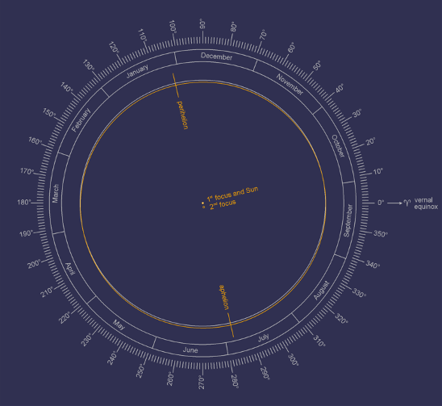

Scientist discover Climate Change caused by change of Earth's orbit
Today we announce this discovery to the Scintific Community, Global Climated change is caused by a change in Earth's orbit.
How we did this?.
In Peru there is a little known Astronomic observatory that recorded the position of the Sun during the Entire year 2000 years ago, using the observatory we were able to reconstruct the exact orbit of the Earth, and compare it with the current orbit.
The result shows a catastrophic difference that demonstrate that the Earth's orbit has changed, this is the cause of th Global Climate Change.

USING THE DATA FROM THE OBSERVARY WE RECONSTRUCTED THE ORBIT OF THE EARTH CON TOTAL PRESITION.
We announce this discovery today July 27, 2021.
In the next days we will add detailed information and simulation showing the Effect of the changed orbit.
Shibboleth Tech Team, Lisbon Portugal.